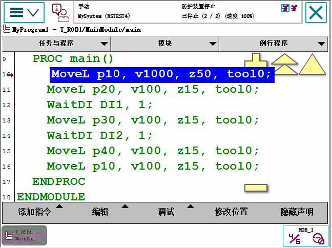

| 浏览和处理 FlexPendant - Main menu | ||
| Program Editor（程序编辑器） | ||
| 概述 | 您可在 Program Editor（程序编辑器）中创建或修改程序。您可以打开多个 Program Editor（程序编辑器）窗口，安装了 Multitasking 选件时，此功能非常有用。 任务栏中的 Program Editor（程序编辑器）按钮会显示任务的名称。 | ||||||||||||||||
| Program Editor（程序编辑器）图示 | 本节显示了 Program Editor（程序编辑器）视图的图示。 
| ||||||||||||||||
| 自动激活微动控制的机械单元 | 如果对多个机械装置和多个动作任务安装了 Multitasking，则在 Program Editor（程序编辑器）窗口之间切换时不会影响微动控制的机械装置选择。这意味着在进行微动控制时，最后使用的机械装置将移动，而不一定是在活动的 Program Editor（程序编辑器）中使用的那个机械装置。 此设置可用主题 Man-machine Communication 中的 Automatically Switch Jog Unit 类型的系统参数来更改。启用此设置将在切换到该窗口时自动激活 Program Editor（程序编辑器）中最后一次使用的机械装置。这意味着在进行微动控制时，在活动的 Program Editor（程序编辑器）中最后一次使用的机械装置将移动。注意，同一任务中在 Program Editor（程序编辑器）之间切换时，不会进行任何更改。 在 Jogging（微动控制）窗口或在 Quickset（快速设置）菜单中手动激活机械装置来进行微动控制，请参阅选择机械单元进行微动控制。 |